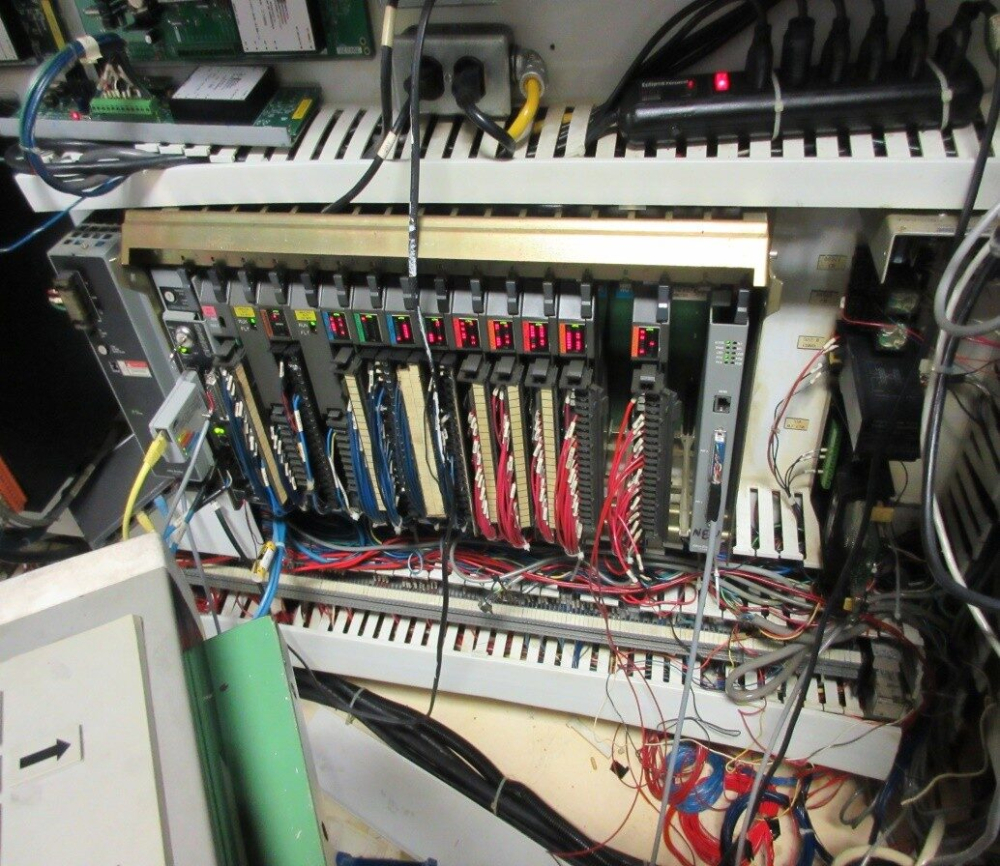

Migrated a legacy PLC5-based test rig — used to apply and measure steering torque on truck steering assemblies — to a modern ControlLogix and Kinetix 6500 platform, with a complete reprogramming of the control logic and a 4-day commissioning window.
